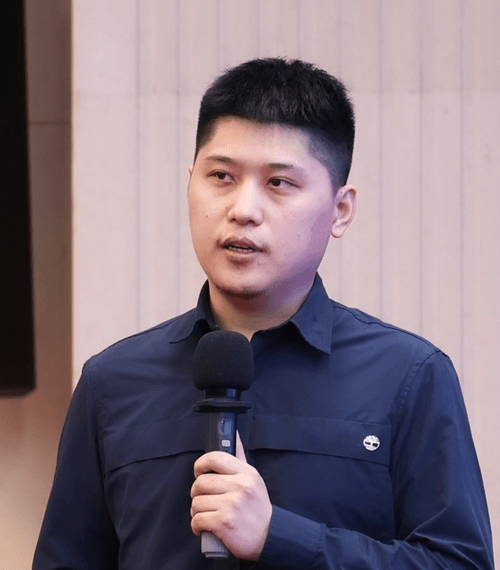

speakers
Keynote
Tao Jiang

Mr. Jiang Tao is the founder and
chairman of the Chinese professional developer community CSDN. During his 30 year career, he
has integrated professional knowledge in the fields of software, internet, and
entrepreneurship. He has led projects such as Giant Handwritten Computer, Kingsoft Software
Ciba, and Hero Super Software. In addition to founding CSDN, Mr. Jiang Tao also founded
Programmer magazine, ITCAST Education, and Geek Founders Ventures. As a shrewd investor, Jiang
Tao has strategically invested in over 80 high-tech startups. Mr. Jiang Tao has served as an
executive member of the Open Source Development Committee of the Chinese Computer Society,
deputy secretary general of the Chinese Computer Society, director of the Intelligent
Application Branch of the Chinese Software Industry Association, and executive director of the
Chinese Invention Association, and is committed to promoting the development of Chinese
software and open source technology.
Keynote
Grace Lian

Grace Lian is the Senior
Director of Advanced Research and Development for Open Source Cloud Software at Intel
Corporation. She leads the development of the company's cloud-native software strategy
and engineering teams, are responsible for driving Intel's contributions to cloud
computing software and collaboration with the open-source community. Currently, her team is
active in multiple software projects and working groups within the CNCF (Cloud Native
Computing Foundation). Over the past two decades, she has been involved in researching and
developing low-level system software, leading global development teams to make significant
contributions in areas such as UEFI, Linux, HTML5, Android, and cloud computing. In 2001, she
established Intel's first Linux development team in China and grew it into the Intel
China Open Source Technology Center.
Keynote
Thomas Molgaard

Thomas Molgaard is Senior
Director of engineering for Arm in China, based in Shanghai. He leads software engineering
groups in charge of technologies which enable a wide range of Arm’s IP and services across all
market segments. Thomas has represented Arm in the Linux Foundation and served on the
technical steering committee of Linaro. Before joining Arm, he worked with software platforms
for Nokia R&D and the Nokia CTO Office with postings in China, USA, and Brazil.
Keynote
Michael Yuan
Michael is the maintainer of
WasmEdge Runtime, a cloud native WebAssembly sandbox project under CNCF. He is the author of
six books on software engineering.
AI
Loubna Ben Allal
Loubna Ben Allal is a Machine
Learning Engineer in the Science team at Hugging Face working on LLMs for code. She is part of
the core team behind the BigCode Project and has co-authored The Stack dataset, SantaCoder,
and StarCoder models. Loubna holds a Master's Degree in Mathematics and Deep Learning
from Ecole des Mines de Nancy and graduated from the MVA Master program at ENS Paris Saclay.
AI
Emily Chen
Emily has 18 years of open-source
community experience, she was a core contributor in Mozilla/Firefox community, GSoC mentor,
Founder of GNOME.Asia and served as the Board of Director in GNOME Foundation in 2010, was
co-founder of Kaiyuanshe. Emily joined MSFT as Open Source Community Manager to evangelize
MSFT OSS technology and strategy to the broader OSS community since 2014; Later she worked as
a product manager in C+AI to build China Azure Marketplace from 0-1 for both customers and
ISVs; Since 2018, Emily was the PM lead of STCA AI Vertical team to develop "Industry +
AI" solutions for China top enterprise customers, manage multiple enterprise AI projects,
build the scalable solutions and deliver flagship projects in China for top customers. Since
2022, Emily worked in Microsoft Data Integration team as Principal PM lead for Data Factory
APAC PM team.
AI
Bosheng Ding

Bosheng Ding is the founder of
the open source project, PandaLLM. He is a researcher and PhD candidate at Nanyang
Technological University, focusing on deep learning and natural language processing. His
research focused on Large Language Models and Robust NLP Systems. Bosheng has demonstrated a
strong aptitude for research, as evidenced by his publications at top AI conferences. In
addition to his own research, Bosheng has also served as a reviewer for various AI
conferences, including EMNLP, ACL, KDD, SIGDIAL, and WSDM. He is also an adjunct lecturer on
digital marketing at the Singapore University of Social Sciences. Prior to his Ph.D. studies,
Bosheng worked as a financial risk management consultant for PwC Consulting. In this role, he
contributed to projects in a number of countries, including Singapore, Thailand, the
Philippines, Malaysia, Austrilia, and South Africa. Bosheng’s experiences in academia and
industry have equipped him with diverse skills and perspectives, making him well-suited to
tackle complex problems at the intersection of technology and business.
AI
Xu Han
Han Xu is the chief researcher at
ModelBest. He was a postdoctoral fellow at Tsinghua University, with research directions in
natural language processing, pre-trained language models, and knowledge graphs. He has
published numerous papers in international conferences on natural language processing and
artificial intelligence such as ACL and EMNLP. He has been cited over 5,900 times on Google
Scholar. As one of the main contributors, he participated in the community building of the
OpenBMB large model and the open-source of the CPM series models. During his doctoral studies,
he received various honors including the National Scholarship, Tsinghua University's
Jiang Nanxiang Scholarship, Tsinghua University's Department of Computer Science Zhong
Shimou Scholarship, Tsinghua University's Outstanding Doctoral Dissertation, and the
Microsoft Scholar Scholarship. He was selected for the CCF Excellent Doctoral Dissertation
Incentive Plan for 2022, the Postdoctoral Innovative Talent Support Program, and the Tsinghua
University Shuimu Scholar Program.
AI
Yuwen Hu

Yuwen graduated from KTH Royal
Institute of Technology in Sweden and currently serves as an AI Frameworks Engineer at Intel.
She excels in developing acceleration frameworks for deep learning and large language models.
In addition to her multiple educational sessions on LLM, she is also one of the core team
members of BigDL project.
AI
Yuhao Jiang

Corporate Counsel, Microsoft Asia
R&D Group Legal Affairs
AI
Anni Lai

Anni Lai is the Head of Futurewei
Open Source Operations and Marketing. She drives Futurewei’s open source governance, process,
compliance, training, project alignment, and ecosystem building. Anni has a long history of
serving on various open source foundation boards such as LF CNCF, LF OCI, LF Edge, OpenStack
Foundation, and is currently on the LF AI & Data, Open Metaverse Foundation, LF Europe
Advisory boards, and Kaiyuanshe.org Advisory Committee. Anni has been instrumental in growing
various open source projects and building ecosystems in the areas of Cloud Native, Edge, AI,
and Metaverse.
AI
Ted Liu
Ted Liu, has a long-standing
commitment to participating in open-source communities both domestically and internationally.
His current roles include being a co-founder of the kaiyuanshe an official member of the
Apache Software Foundation, a member and mentor of the Incubator Project Committee, and a
member of the Community Development Committee. He is also involved in consulting roles for
open-source related businesses or communities, such as being an advisor for the Open Source
Rainforest community, an External Advisor for BAIN & Company, and Tencent Cloud TVP. He
has previously served as an open-source consultant for Tencent Cloud Tengyuan Club, the
Strategic Business Director for Microsoft China, the Chief Technical Evangelist for
Microsoft's Open Technologies and Microsoft's Asia-Pacific R&D Group. He also
held positions at Oracle (China) as the Channel and Alliance Director, the Linux Strategy
Director, and the General Manager of the Middleware Business Division for Greater China.
Furthermore, he served as the Vice President for the Asia-Pacific region at Turbolinux.
AI
Stefano Maffulli

Stefano is the executive director
of the Open Source Initiative. An experienced leader of open source organizations, from
non-profits advocacy groups and trade organizations to business ventures and community
projects across countries. With a proven track record in community building, he’s also an
active contributor to open source projects. When not basking in front of a monitor, you’ll
find him teaching sailing or perfecting his pizza technique.
AI
Wei Meng
Mr. Meng Wei serves as the
Director of Open Source Strategy at ZTE Corporation. Since 2016, he has spearheaded ZTE's
preliminary research in artificial intelligence. Passionate about AI and 5G, in 2018, he was
appointed as the Chair of the ITU-T ML5G WG3, a United Nations International Telecommunication
Union group focused on applying machine learning to 5G network architectures. Meng is also the
Vice Chair of the China AI Industry Development Alliance, a board member of the Linux AI &
Data Foundation, and was elected its Chairman in 2023. He has held roles as PTL for the Linux
Foundation's ODL project and mentor for the Adlik project, contributing to multiple
international standards in AI and network function virtualization. Additionally, Meng holds
over 30 patents, both in China and internationally, as the lead inventor.
AI
Zhenhua Sun
ByteDance Open Source Committee
Legal Advisor, responsible for the company's legal affairs related to open source,
dedicated to implementing and improving the OpenChain international standard for open source
compliance within the company. Actively involved in open source community activities for an
extended period, a proactive contributor to the OSCAR (Open Source Compliance and Resource)
activities organized by the Institute of Information and Communication Technology, and the
author of the Open Source Compliance chapter in the 'Modern Corporate Compliance
Guide.' Formerly served as a lawyer and patent agent.
AI
Yanzhi Wang

Yanzhi Wang is an associate
professor and faculty fellow at Dept. of ECE at Northeastern University, Boston, MA. He
received the B.S. degree from Tsinghua University in 2009, and Ph.D. from the University of
Southern California in 2014. His research interests focus on model compression and
platform-specific acceleration of deep learning applications. His work has been published
broadly in top conference and journal venues (e.g., DAC, ICCAD, ASPLOS, ISCA, MICRO, HPCA,
PLDI, ICS, PACT, ISSCC, AAAI, ICML, NeurIPS, CVPR, ICLR, IJCAI, ECCV, ICDM, ACM MM, FPGA,
LCTES, CCS, VLDB, PACT, ICDCS, RTAS, Infocom, C-ACM, JSSC, TComputer, TCAS-I, TCAD, TCAS-I,
JSAC, TNNLS, etc.), and has been cited around 16,000 times. He has received six Best Paper and
Top Paper Awards and one Communications of the ACM cover featured article. He has another 13
Best Paper Nominations and four Popular Paper Awards. He has received the IEEE TC-SDM Early
Career Award, APSIPA Distinguished Leader Award, Massachusetts Acorn Innovation Award, Martin
Essigmann Excellence in Teaching Award, Massachusetts Acorn Innovation Award, Ming Hsieh
Scholar Award, YIP Award and other research awards from Google, MathWorks, etc.
AI
Qing Wei
As an ICT industry veteran, Mr.
Qing Wei has been working in mobile communication, information technology and smart devices
related business for over 30 years in Asia. His business footprint spans across Mainland
China, Singapore and Hong Kong SAR and is specialized in information technology and
telecommunication product development & management as well as sales & marketing
management.His most recent role as Chief Technology Officer in Microsoft (China) Ltd allows
him to work with industry partners and influencers in China to evangelize Microsoft’s
technology vision, innovation and digital transformation practices based on the advanced
technology of cloud computing, IoT, big data, machine learning and artificial intelligence. he
is also working closely with customers and partners together to leverage the advanced
technology to solve real-world societal and industry problems with sustainable growth
potentials.
AI
Liliya Wu

Liliya Wu is responsible for
supporting Arm software strategy in AIoT filed. Carry out technical evangelism work around
Arm-based solutions and software tool chains. Collaborate with ecosystem partner such as
Baidu, Alibaba and promote the implementation of Arm-based edge AI technology cooperation. She
is committed to driving satisfaction with the existing arm tools and platform technologies,
improving developer experience and assisting the larger developer community better understand
how to successfully adopt and use arm tools and platform technologies.
AI
Yang You
Yang You serves as a Presidential
Young Professor at the National University of Singapore (NUS), joining the ranks of
exceptional early-career talents. He earned his Ph.D. in Computer Science from UC Berkeley
under the guidance of Prof. James Demmel, a notable figure in the Computer Science Division
and the EECS Department. Yang's research delves into Parallel/Distributed Algorithms,
High Performance Computing, and Machine Learning, primarily focusing on amplifying deep neural
network training on extensive systems. In 2017, his team set a new benchmark by achieving the
world's fastest ImageNet training speed, gaining significant media attention. Two years
later, they surpassed the world record for BERT training speed, influencing the training
techniques adopted by tech behemoths like Google, Microsoft, and NVIDIA. Yang's
pioneering LARS and LAMB optimizers feature in the industry-standard MLPerf benchmark. Over
the years, he has clinched numerous awards, such as the IPDPS 2015 Best Paper Award, ICPP 2018
Best Paper Award, and the prestigious AAAI 2023 Distinguished Paper Award. Recognized as a
Siebel Scholar and recipient of the Lotfi A. Zadeh Prize, Yang was also UC Berkeley's
nominee for the ACM Doctoral Dissertation Award. His influence and achievements secured him a
spot in the Forbes 30 Under 30 Asia list in 2021 and earned him the IEEE CS TCHPC Early Career
Researchers Award.
Zach Zhao
Zach serves as a senior software
engineer at Arm China. He is responsible for ecosystem software development and partnership
engagement in Client line of business. He is proficient in developing and optimizing
performance of computer vision and artificial intelligence applications in Arm platforms. Zach
hold patents and graduates from the Chinese University of Hong Kong
AI
Zhipeng Huang
Zhipeng Huang currently serve as
Director of Open Source for Huawei Compute product line covering Operating System, Database
and Artificial Intelligence. Zhipeng is now the TAC member of LFAI, TAC and Outreach member of
the Confidential Computing Consortium, co-lead of the Kubernetes Policy WG, project lead of
CNCF Security SIG, founder of the OpenStack Cyborg project, and co-chair of OpenStack Public
Cloud WG. Zhipeng is also leading a team in Huawei that works on ONNX, Kubeflow, Akraino, and
other open source communities
Rust PL
Yu Chen
Yu is the associate professor of
the Computer Science Department in Tsinghua University. His research interest is to
investigate the principle, design, and implementation of operating systems that need high
performance, high availability, with reduced overhead for emerging new storage, networking,
and computing architecture.
Rust PL
Yang Feng

Dr. Feng is an assistant research
professor in the Department of Computer Science and Technology at Nanjing University. Before
that, I obtained my Ph.D. degree from the University of California, Irvine, in 2019. He got my
B.Sc. Degree from Nanjing University. His research interests lay on the quality assurance of
complex software systems and the implementation of reliable software infrastructure.
Rust PL
Gary Guo

Gary is a team member of the Rust
for Linux project. He also actively contributes to the Rust project and is a member of the
FFI-unwind working group. He has interest in operating systems, compilers, microprocessor
design and open-source software and hardware.
Xiaoyu JIa
He is a Rust and operating system
enthusiasts. Currently studying network engineering at Wenzhou University. He has participated
in openEuler internship and is currently the main developer of this project.
Jie Liu

A service framework development
engineer at Bytedance, the maintainer of the CloudWeGo Volo project. Primarily dedicated to
the research and development of microservice frameworks, performance optimization, and
implementation. Interested in the implementation aspects of the Rust compiler.
Rust PL
Bart Massey
Professor Bart's research
interests are quite broad, but all contain an emphasis on open source technology development
and software engineering. I have a Ph.D. in artificial intelligence, and do some work around
applications of search and machine learning in autonomous systems, planning, and scheduling,
and one- and two-player games.
Rust PL
Nicholas Nethercote

Dr. Nicholas is a seasoned
software engineer and team leader specializing in performance optimization and memory
efficiency. With significant contributions at Futurewei, Apple, and Mozilla, he has improved
Rust compiler, Firefox, and pdf.js among others. A dedicated profiler developer and code
refiner, they've also led key initiatives like Project Candle and MemShrink. Dr. Nicholas
won the Most Influential PLDI Paper Award for research on Valgrind, the subject of their PhD.
He has a passionate educator, known for 'The Rust Performance Book' and numerous
insightful blog posts. Their versatility extends to diverse projects like power estimates and
OS X deep-dives.
Rust PL
Josh Triplett

Josh is a developer on the Rust
project. I co-lead the Rust language team, and work on the Rust library team and the Cargo
package manager. I care about building welcoming, inclusive communities that lift people up. I
love building solutions to systemic problems.
Tianxing Ye

Software development engineer,
enthusiast of the Rust language. Currently working on infrastructure development for Rust in
China, as well as a decentralized Monorepo Engine implemented in Rust.
Rust PL
Alex Zhang
Alex Zhang is a senior
independent consultant, evangelist of the Rust Chinese community, technical author, and author
of "The Way of Rust Programming."
Rust PL
Folkert de Vries
Folkert is a Rust engineer, doing
both embedded and systems programming. He is one of the main contributors of Roc, a new purely
functional programming language, written in Rust (and a bit of Zig). At Tweede golf, he
currently works on the Network Time Protocol, a core internet protocol, and open-source
university Rust course, Rust 101.
Mobile & Web
Rik Arends

With 20+ years’ experience as a
C/C++, JavaScript and more recently Rust developer, I've always been excited by using
computation for visuals and audio. For this to work you need performance, and a smooth
workflow enabled by the right tooling. After having everything I wanted with C except stable
code I moved to JavaScript and web technologies. However, this never got to the point of being
able to make fast applications that use modern CPU and GPU power. Now with Rust we have a new
chance. I've been an entrepreneur my entire life building VJ software in the 00's,
then web UI technology and web IDEs with Cloud9, and am now reimagining the developer workflow
in Rust with Makepad.
Mobile & Web
Kevin Boos

Kevin Boos is currently a
software architect at Futurewei, where he is working on a next-generation Rust software stack
for mobile systems and exploring how to improve the experience of using Rust on mobile. Kevin
is also the creator of Theseus OS, an open-source OS written from scratch in Rust that
rethinks the structure and implementation strategy of operating systems, with an emphasis on
how to maximally leverage language mechanisms for compile-time safety and verifiable
correctness.
Kevin obtained his PhD from Rice University with a focus on OS design, with other interests
spanning the domains of I/O virtualization, device drivers, mobile virtual reality, static
analysis, and safe programming languages. His academic work has been published in top computer
engineering conferences over the past decade, and he continues to collaborate with OS
researchers in academia and the open-source community.
Mobile & Web
Wenjing Chu

Wenjing is a Senior Director of
Technology Strategy at Futurewei Technologies, Inc. He leads new technology development in the
future of computing, trust, and trustworthy AI. He is a founding board member of the
OpenWallet Foundation (OWF) and its Technical Advisory Council (TAC). He is also a founding
board member of the Trust of IP Foundation (ToIP). In ToIP, he is a primary author of the
Trust Spanning Protocol Specification (TSP) and of the Technology Architecture Specification,
while serving as Co-Chair for the Trust Spanning Protocol Task Force and for the AI and
Metaverse Task Force. He also previously served in leadership roles for the Linux Foundation’s
Networking Foundation and the Edge Computing Foundation. Over his career, he had been an
entrepreneurial and technical lead in several successful Silicon Valley startups including
Airespace, Inc. and Sentient Networks, Inc.
Mobile & Web
Jonathan Kelley

Jonathan Kelley is the founder
of Dioxus Labs and the creator of the Rust frontend framework Dioxus. Before Dioxus, he used
to work as a Systems Engineer at Cloudflare building 1.1.1.1 and WARP.
Preston Lau

Preston Lau is the Senior
Director of Strategy & Business Development at Futurewei Technologies Inc. In his current
role, he is leading cross-functional strategies for open source initiatives in support of the
company growth in new markets & new innovative product areas. Earlier in his career,
Preston worked for Google where he led Google’s strategic partnership development in the
region and successfully established key relationships with renowned telecom operators and
mobile manufacturers, as well as content developers to beef up Google’s service offerings
around mobile, videos, maps and finance. From AI startup to billion-dollar corporations, he
has accumulated 25 years of strategy & business development experience in hi-tech
companies. He earned his Computer Science degree from the University of Wisconsin–Madison.
Mobile & Web
David Rheinsberg

David has a background in Linux
Kernel development, low-level Linux user-space, and particularly IPC. His recent efforts
involve advocating for Rust in Linux system development, as well as supporting Rust
application frameworks with operating-system abstractions.
Mobile & Web
Martin Robinson

Martin Robinson is a software
engineer and partner at Igalia. He has spent the last decade working on the web platform,
specializing in the implementation of CSS and the painting of web content. Through the years
he has contributed to Blink, Gecko, and WebKit as well as a variety of browsers that use them.
Currently, Martin works on the experimental browser engine, Servo, which aims to bring more
memory safety and concurrency to the web. Igalia is a Free Software consultancy with
headquarters in Spain and developers all around the world, specialized in innovative
open-source technologies on a wide set of platforms.
Auto & Robotics
Nan Dong
Nan Dong is the senior vice
chief engineer at Changan Automobile. He works on perception and prediction in autonomous
driving. He received the Ph.D. degree from Tongji University in 2011. His research expertise
covers a wide span from image processing, signal processing, and machine learning, and
implemented in multiple industries such as security, automotive, and healthcare. He served as
an industrial supervisor at Chinese Academy of Sciences and Beijing Institute of Technology.
Auto & Robotics
Hongyang Li

Dr. Hongyang Li is a Research
Scientist at OpenDriveLab, Shanghai AI Lab. He works on perception, sensor fusion and
applications for scalable products in autonomous driving. He received the Ph.D. degree from
Chinese University of Hong Kong in 2019. He is a recipient of the Hong Kong Ph.D. Fellowship
scheme. His research expertise covers a wide span from object detection, pose estimation, 3D
vision to CNN structure, few-shot learning. He has some publications at
CVPR/ICCV/ECCV/ICML/ICLR/NeurIPS/T-PAMI/IJCV, including some oral papers as first author. He
served as an industrial lecturer at Tsinghua University and the industry Ph.D. supervisor at
Shanghai Jiaotong University since 2021. He serves as Area Chair for CVPR, NeurIPS. He
proposed UniAD, an end-to-end autonomous driving framework that won the CVPR 2023 Best Paper
Award.
Auto & Robotics
Mike Roberts

Mike Roberts is a research
scientist at Intel Labs. His current work is at the intersection of computer graphics,
computer vision, and robotics, where he focuses on applying photorealistic synthetic data to
real-world perception and control problems. Previously, he was a research scientist at Apple,
where he led the development of Hypersim - Apple's first large public image dataset for
AI research. In 2019, Mike received his PhD from the Computer Graphics Laboratory at Stanford
University advised by Pat Hanrahan. During his graduate studies, Mike interned at Microsoft
Research, Skydio, and Harvard University. In 2013, Mike co-developed the Introduction to
Parallel Programming course at Udacity, which enrolled over 80,000 students from 2013-2018.
Auto & Robotics
Jin Shang

Dr. Shang Jin, CEO & CTO of
Automotive Intelligence and Control of China Co.,Ltd, Chief Technologist of National
Intelligent Connected Vehicle Innovation Center(CICV), the Chair of the Basic Software Working
Group of the China Intelligent Connected Vehicle Industry Innovation Alliance, the Deputy
Director of the Software Branch of the China Society of Automotive Engineers. A
multidisciplinary technology expert in fields such as autonomous driving, intelligent
vehicles, network security, cloud computing, and artificial intelligence. With over 20 years
of experience in Silicon Valley, Successively served as CEO of overseas R&D centers for
major OEMs and technical and R&D leadership roles in various technology companies in both
China and the United States. Dr. Shang has national level awards of “National best
dissertation”, “National Entrepreneurship”, “Special Prize of the China Automotive Industry
Science and Technology Progress”, and more than 50 patents and publications in both China and
the United States. Dr. Shang hold Bachelor's, master's, and doctoral degrees in
Automotive Engineering from Tsinghua University and a master's degree in Computer Science
from the University of Southern California.
Auto & Robotics
Xavier Tao

Xavier Tao is a French software
engineer developing practical solutions for ML/AI users and engineers through open-source
projects. One such project is Wonnx, a webGPU-based ONNX inference run-time fully written in
Rust, which allows it to be available on internet browsers and natively on most computers.
Xavier is currently fully invested in the dora-rs robotic framework project, also written in
Rust. Dora-rs aims to make building robots fast and easy. Previously, he has developed AI
models into production for multiple industries, including consulting (BCG), banking (BNP
Paribas) and technology (Futurewei).
Jiezhang Wang

JieZhang Wang, a senior engineer
at Huawei Cloud Computing, is an avid enthusiast of cloud native and edge computing
technology. He actively participates in technical discussions and coding as a member of
KubeEdge and head of the KubeEdge SIG networking group responsible for EdgeMesh development.
He is also a maintainer of the EdgeMesh project and OpenEuler SIG Edge group, dedicated to
promoting edge computing technology development
Auto & Robotics
Songyang Yan

One of the core developers of
the Carla team. Currently pursuing a Ph.D. at Xi’an Jiaotong University, specializing in
Vehicle Safety of the Intended Functions (SOTIF) and adversarial scenario generation. He is
one of the main developers of Carla Leaderboard 2.0, leading a Chinese team to collaborate
with the Carla team in Spain to develop a new version of the Leaderboard, adding multiple
scenarios and conducting extensive competition verification and optimization work. Contributed
12 pull requests to the official Carla repository. Has abundant experience in dynamic scenario
design based on Carla.
Auto & Robotics
James Yang
Dr. James Yang is the professor
at Xi'an Jiaotong University and Director of the Turing Cross Information Science
Research Center. He holds a Ph.D. from the University of Pennsylvania, served as a full
professor at Western Michigan University, and was a visiting professor at the University of
Michigan. He is currently a director of the China Electric Vehicle 100 (EV100) forum; co-chair
of the IEEE Technical Committee on Electric and Autonomous Vehicles; vice-chair of the IEEE
International Standard Working Group on Autonomous Driving; and has published over a hundred
papers. He has received awards such as the ACM SIGSOFT Distinguished Paper Award and the ACM
TODAES Best Journal Paper Award. In 2019, he founded Shenxin Innovation, focusing on the
research and development of autonomous driving system software.
Auto & Robotics
Yanyong Zhang

Dr, Yanyong Zhang is a full
professor at the School of Computer Science and Technology, University of Science and
Technology of China. Her current research focuses on intelligent perception for autonomous
driving systems. She has published more than 200 academic articles in relevant international
journals and conferences and has received multiple Best Paper Awards.
Yang Zhang
Dr. Zhang Yang, founder of
AutoCore.ai, co-founder of Autoware Foundation and founder of 96Boards.
Game & Metaverse
Alice Cecile

Scientist and game dev tackling
the impossible. I'm always looking for interesting problems to solve and new ways to look
at things. I have a strong background in complex systems ecology, am one of the core
maintainers of Bevy, the most popular Rust game engine, and have a passion for statistics and
machine learning.
Game & Metaverse
Felipe Erias

Felipe Erias is a software
engineer and interaction designer at Igalia, currently working on the Wolvic Web browser for
VR. He is also a contributor to the Chromium and WebKit web engines, as well as to several
Internet standards. Previously he focused for a decade on mobile technologies, working on
research as well as on commercial projects. Felipe holds degrees on human-computer interaction
from the universities of York (UK) and Malmö (Sweden), as well as on computer science from the
university of Coruña (Spain). Igalia is a Free Software consultancy with headquarters in Spain
and developers all around the world, specialized in innovative open-source technologies on a
wide set of platforms.
Game & Metaverse
Dennis Fu
Dennis Fu currently works for
Khronos Group as VP Business Development for Greater China Region. The Khronos Group is a
U.S.-based global technical standards organization dedicated to developing open and
royalty-free technical standards in many areas including GPU APIs, 3D graphics, computer
vision, heterogeneous computing, 3D commerce, AR/VR, AI/machine learning, sensor API,
Metaverse, etc. Dennis has nearly 30 years of working experience in the global technology
industry and has worked in senior management roles in MNCs including Analog Devices, Qualcomm,
and Spirent Communications, in both U.S. and in China. Currently he lives in Shanghai.
Game & Metaverse
Bin Zhang

Bin Zhang is responsible for
promoting Qualcomm’s XR business in China. His 14 years of experience in the industry also
includes a focus on R&D of mobile gaming on the Snapdragon platform with performance
optimizations and Bin was the first author of related patents.
Game & Metaverse
Nathan Li

Nathan is the Senior Manager of
Developer Ecosystem at Arm China, currently focusing on domestic software technology ecosystem
development and strategic partnerships. He has extensive professional experience in
application development, graphics rendering, 3D game engines, computer vision, and machine
learning.
Game & Metaverse
David Smith

David A. Smith, Founder and CTO
of Croquet and Board Member, is a trailblazer with over 30 years in AR and VR. He has founded
seven companies, including The Colony, the inaugural 3D adventure game, and Virtus
Corporation, pioneering 3D PC design. Notably, he developed visualization software for James
Cameron’s “The Abyss” and has sold millions of games. Co-founding Red Storm Entertainment with
Tom Clancy and being Gensym's Chairman, a premier public AI entity, are among his many
accolades. Recently, he headed AR and VR at Lockheed Martin. An innovator, David holds 32
patents and has a BS in Mathematics from the University of Chicago.
Game & Metaverse
Qingli Wang

Qingli Wang has a long career in
Graphics/XR/Digital Twin fields. Previously focused on mobile and wearable (watch/VR) graphics
and middleware of Opensource OS, working on research and commercial products. Currently in
charge of Cocos XR technical development and team management. He got his Master's degree
in VR research direction from Southeast University in 2009.
Ethan Weber

Ethan Weber is a Ph.D. student
at Berkeley, studying 3D reconstruction under the supervision of Prof. Angjoo Kanazawa.
Previously, he earned both a Bachelor's and a Master's degree at MIT while
collaborating with Prof. Antonio Torralba. His research primarily revolves around the task of
transforming two-dimensional (2D) photographs into a comprehensive three-dimensional (3D)
representation of the world. Traditional 3D reconstruction methods often struggle when dealing
with data from real-world or casual captures. Ethan's research aspiration involves
expanding the capabilities of 3D reconstruction algorithms to accommodate a broader array of
input types. Some of his notable works include Nerfstudio and Nerfbusters, which contribute to
advancing Neural Radiance Field (NeRF) methods. Beyond his academic interests, he engages in
helping companies use 3D reconstruction methods for their real-world needs.
Secure your seat at the frontier of
Tech.
Shanghai, China